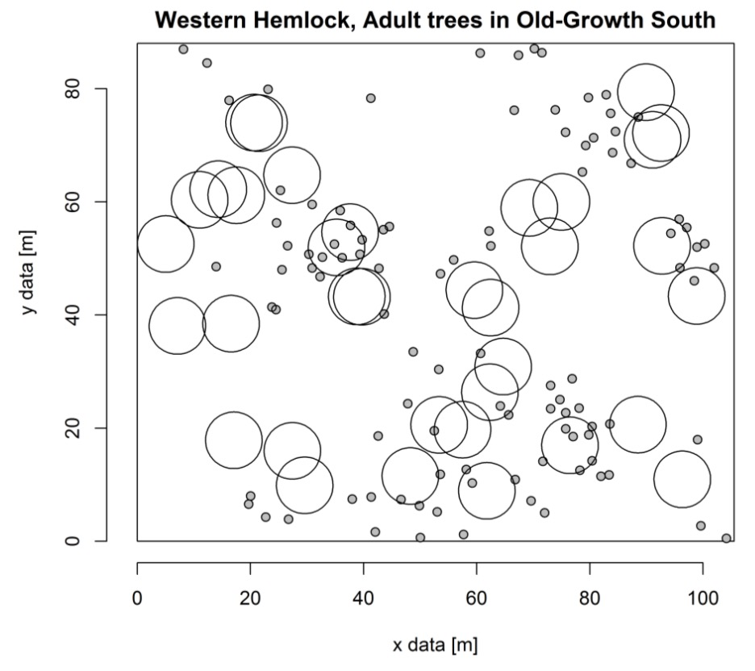

An exemplary solution using the Excel template can be found here here.
We counted points covered by 35 coins that were randomly dropped onto the point pattern. The total number of points found within the circles divided by 35 gives you an estimate of the point density \(\lambda\) (events per area). Note, the area here is not given in ‘coin area’ not \(m^2\).
Using this density \(\lambda\), we calculated the probability of a coin covering n points if the points were randomly distributed. This probability multiplied by 35 gives the expected number of coins in the experiment that cover n points.
We used a statistical test if your actual counts significantly deviated from the Poisson distribution. This means we tested if the points are randomly distributed. We used a chi-squared test (\(\chi^2\)-test) which also works well for small sample sizes. The sample size \(k\) is the number of classes (sample categories), i.e. if up to 5 points in a circle were counted, there are 6 classes (\(n=0, n=1, ..., n=5\)). The test requires the expected number of discoveries in a sample category to be (as a rule of thumb) at least 3. Therefore, we merged categories 2-6 to be one category, leaving only three sample categories (\(n=0, n=1, n>1\)).
The \(\chi^2\)-value is compared to the corresponding value from the \(\chi^2\)-distribution. The degrees of freedom (d.f.) was only 1, because we had only three sample categories and we had to subtract 2 d.f. because we 1) estimated the point density \(\lambda\) from our data and 2) the number of sample categories \(k\) also depended on our data, i.e. in your experiments you might have ended up with more than 3 categories. The critical value of the \(\chi^2\)-distribution can be looked up in statistics textbooks and is also included in all statistical software, e.g. in Excel (=CHISQ.INV(0095;1)) or in R (qchisq(q=0.95, df=1)). In case the null hypothesis was rejected, the points in pattern are not random.
Although in the experiment showed there were signs of the points being not randomly distributed, we finally used an index of dispersion to see if there is a (non-significant) tendency towards clustering or regularity in the pattern. Because in the Poisson-case the variance of our counts \(s^2\) equals its mean density \(\lambda\), we can use the index of dispersion, which is 1 if the points are randomly distributed and larger if they are clustered.